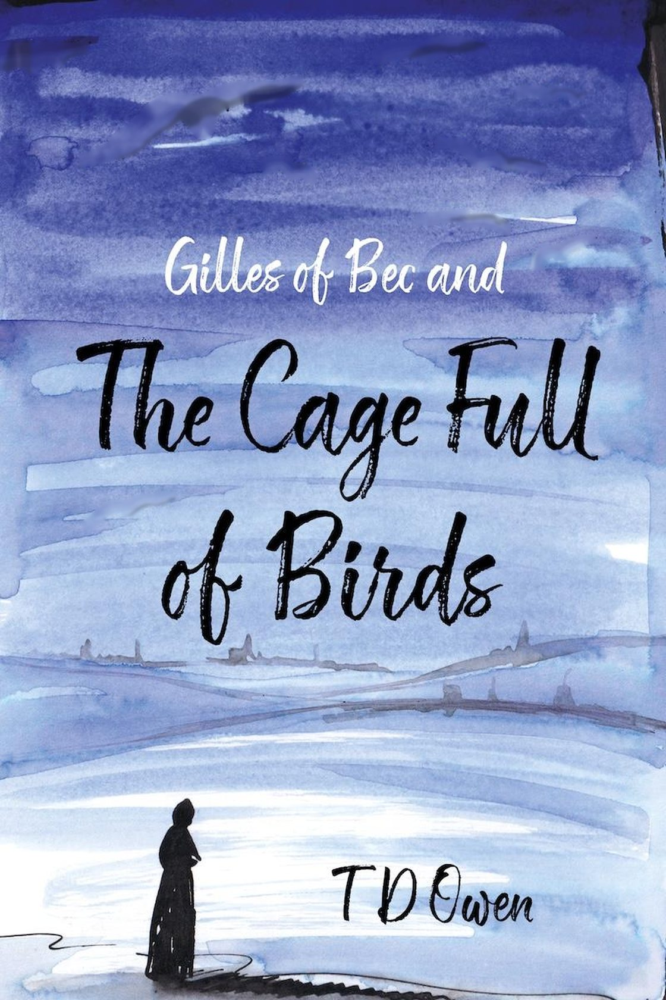
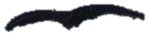
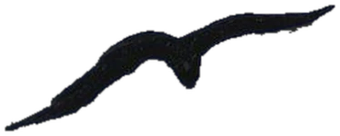
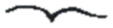
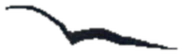
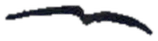
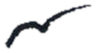
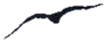
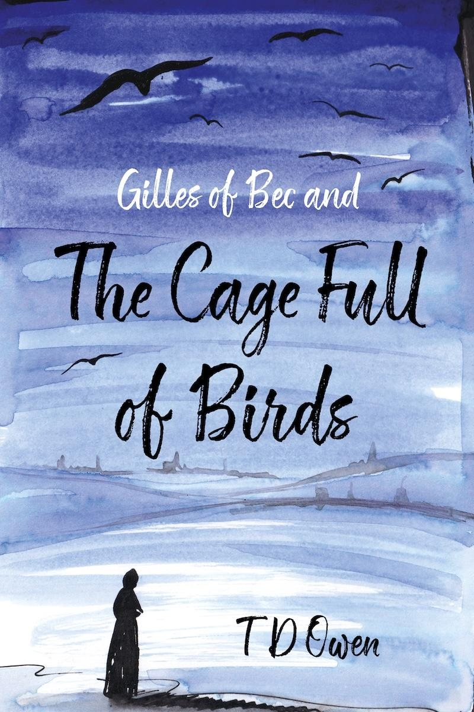
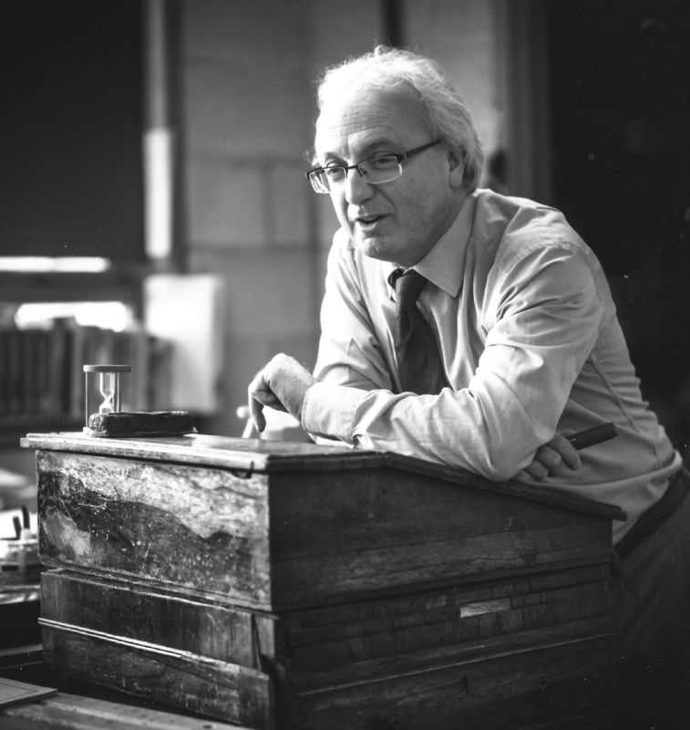

Gilles of Bec and The Cage Full of Birds by T D Owen








In 1138, Gilles, a monk barely into manhood, is sent by the great abbey of Bec in Normandy to its estate of Stivetun in Berchescire.
But England is falling into The Anarchy. Gilles of Bec and The Cage Full of Birds, the first of The Gilles of Bec Chronicles.
Buy from Troubador

The story of real people
who lived and struggled in The Anarchy of twelfth century England: a stirring tale of self-discovery, the triumph of hope over doubt and, ultimately, of good over evil.
His charge seems routine: farm the abbey's lands and care for the souls of its peasant tenants. Then come the self-serving Bishops of Wyncestre and Sarum, Alvric the obdurate reeve, the seductive Maud of Walingeford, and Peter of Waneting, his old mentor from Bec, who is forever shifting shape.
"It is nearly nine hundred years since my predecessor, Gilles of Bec, was appointed priest of Steventon. Yet the troubles he faced are echoed by modern day events."Rev'd Phil Sutton, St Michael and All Angels, Steventon, 2017 to 2025
- "Gilles shines through like a Candide."
- "You made the landscape and period integral to the reading experience, not just the characters and plot."
- "Great suspense building and humour too."
Gilles's country
The book keeps the old names. Most of them are still on the map.
- Stivetun
- Steventon, where the waters of his leat still flow
- Berchescire
- Berkshire
- Oxeneford
- Oxford
- Wyncestre
- Winchester, and its bishop
- Walingeford
- Wallingford, and Maud
- Sarum
- Salisbury, and the other bishop
"The old track between Oxeneford and Wyncestre is there climbing the hill from which Gilles and Alvric surveyed their lands."
From the Chronicles
The Bishop of Wyncestre sat back in his episcopal throne, settling into the cushions stuffed with the finest of Hamptunscire wool, and closed his eyes. It was the most unpredictable but the most preventable of catastrophes that had set the ass braying in the first place.
The Lamentations of Henry, Bishop of Wyncestre, 1096 to 1171
What he read
The chroniclers who were writing at the time, and who left Gilles out:
- William of Malmesbury
- Henry of Huntingdon
- John of Worcester
- Orderic Vitalis
- the Gesta Stephani

T D Owen
A history teacher for much of his life. His classroom had a wardrobe of historical costumes, cases of ancient artefacts and drawers full of model battlefields, and on the playing fields his pupils re-created the Dam Busters raid and the first tank battles of the Great War.
Then came years in record offices, museums, university libraries, abbeys and monasteries, and time on his hands and knees as "a very amateur archaeologist".
"I have aspired to blend fact with fiction, with fact informing the fiction."
Meet him in Oxford
N11
Sunday 22 November, the Oxford Indie Book Fair, Examination Schools, High Street.
He also speaks, teaches and guides battlefield tours.
Get in touch